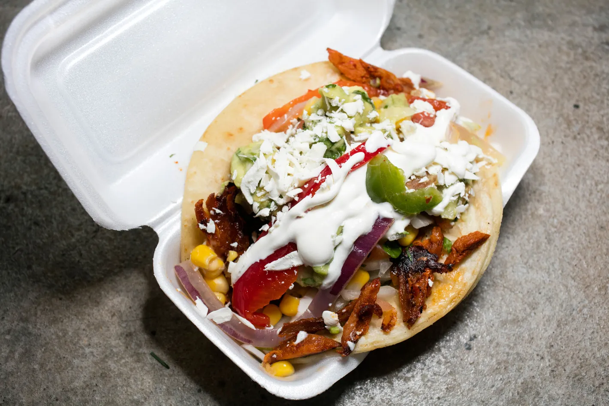

Tacos

Tacos I bought because I can't make them this good
Ingredients
Taco shells
Meat
Cheese
Steps
Cook the meat.
Heat up the tortillas.
Add the cheese.
Assemple and cook on each side for 5 min.
Enjoy!